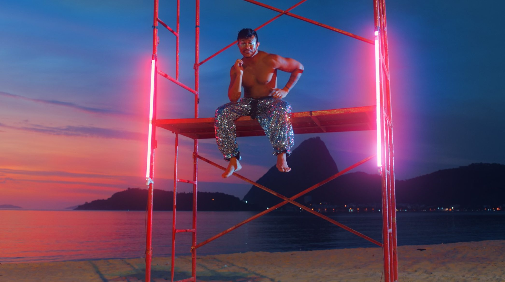
Color Grading · São Marcos RS · Rio de Janeiro
Somos
cor.
Estúdio de color grading para cinema, publicidade e música — do Brasil para o mundo.
Portfólio
Trabalhos selecionados


Marcas que já passaram pela nossa cor


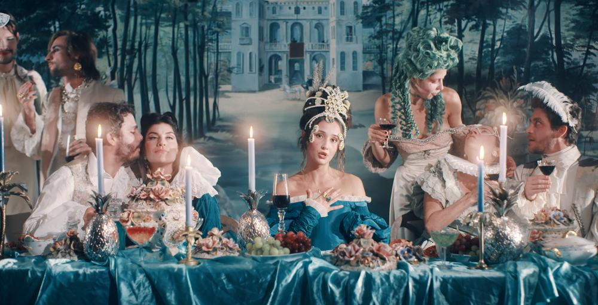
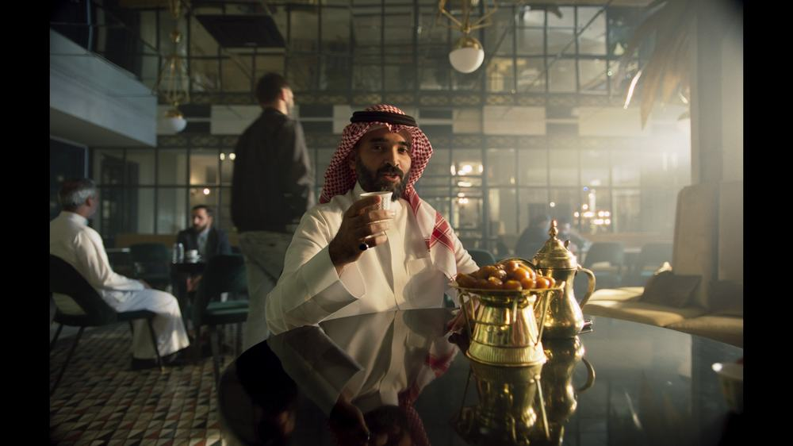
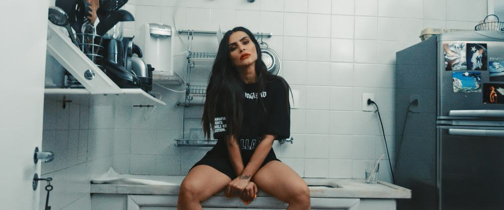
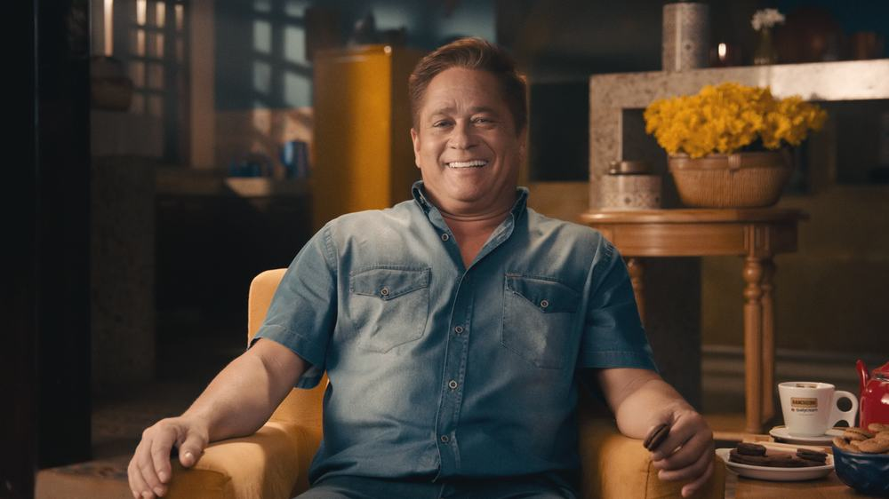
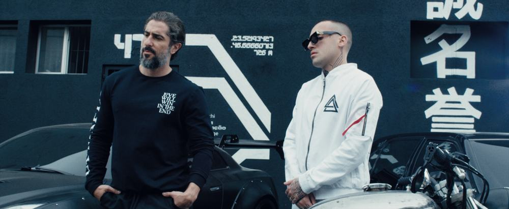
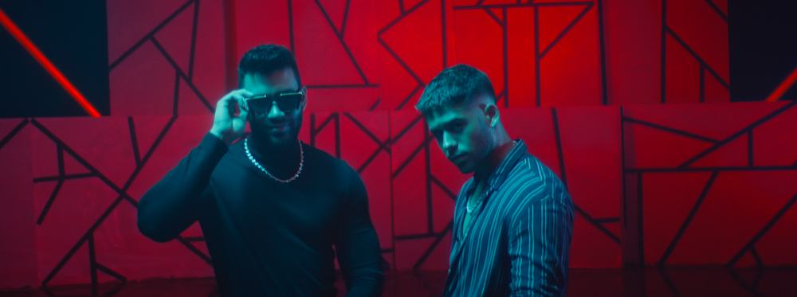
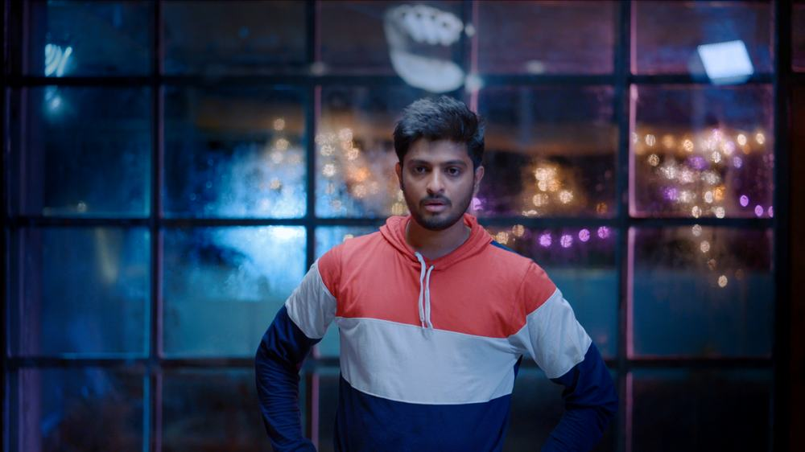
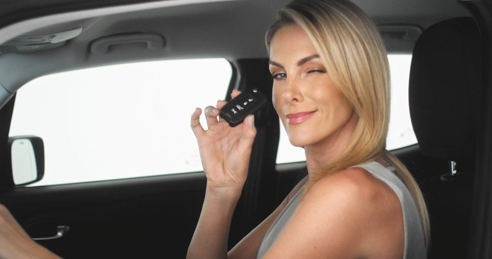
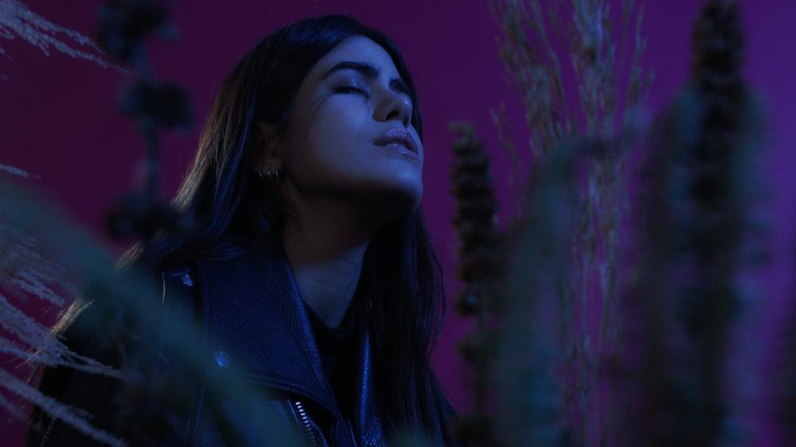
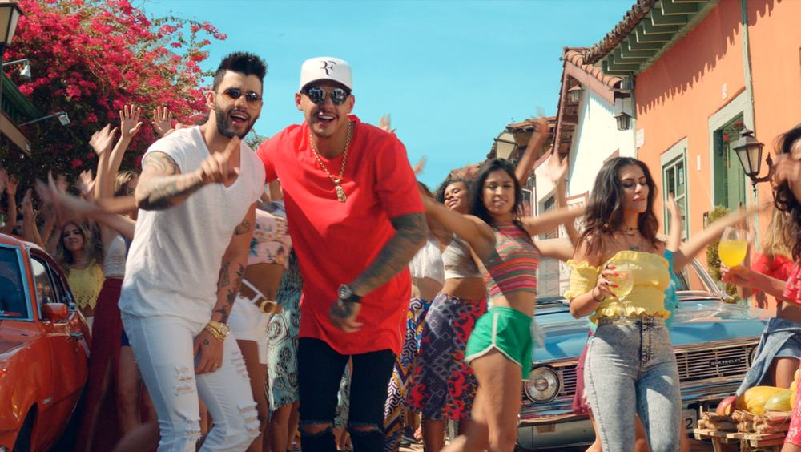
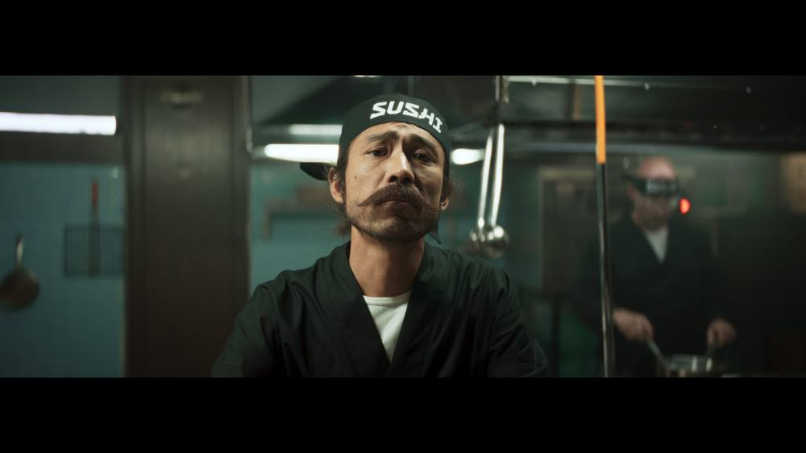
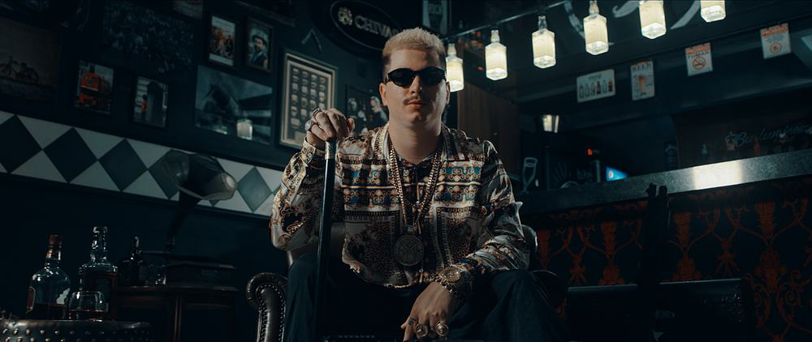
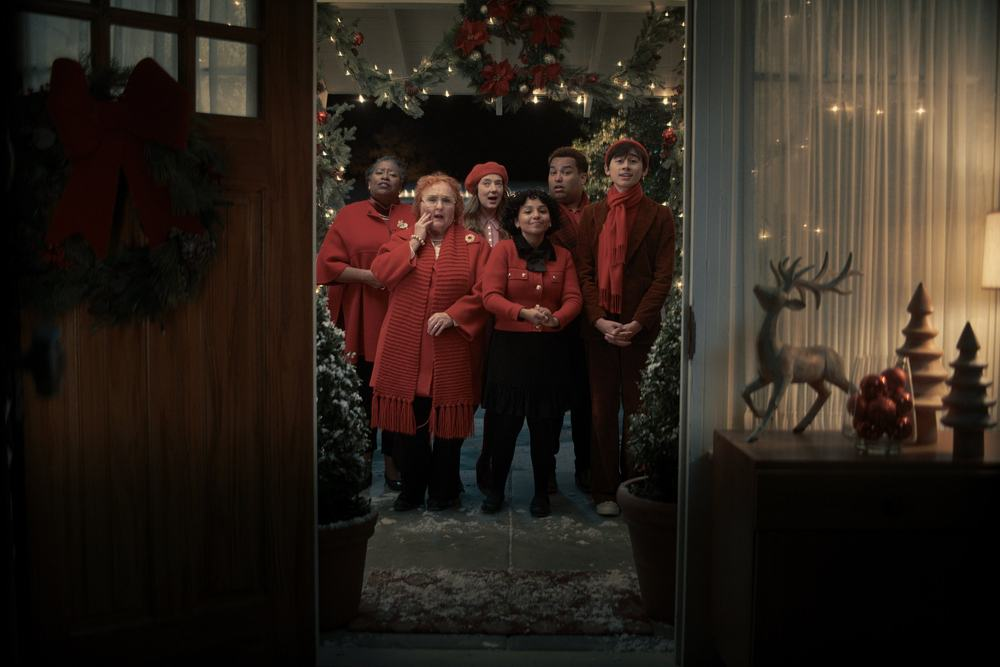
E artistas como: Ana Hickmann · Pocah · Leonardo · Cleo Pires · Antonia Morais · Xamã
O que fazemos
Serviços
Color grading para cinema e série
DI completo para longas, curtas e séries, do dailies ao master.
Publicidade
Comerciais e branded content com a consistência que a marca exige.
Videoclipe
Looks autorais para artistas — do naturalista ao extremo.
Sessão remota ao vivo
Você acompanha e aprova em tempo real, de onde estiver.
HDR e finalização
Entrega em SDR, HDR e DCP, no padrão de cada janela de exibição.
Look development
Definição de look antes das filmagens, junto da direção e da fotografia.
Estrutura
Base em São Marcos, no Rio Grande do Sul, com sessões remotas ao vivo para qualquer lugar do mundo. E quando o projeto pede presença no Rio de Janeiro, atendemos pela parceria com a O2, usando a infraestrutura deles.
O que dizem sobre a nossa cor
Excelente! Nível técnico impecável, agilidade no pré-atendimento, durante e pós-entrega do trabalho. Meu próximo clipe será colorido por eles novamente.
Profissionais altamente qualificados e com alto senso artístico. A Vertigo tem colorizado filmes, publicidade e institucionais para nós com rapidez e muita qualidade.
Qualidade indiscutível, difícil encontrar coloristas com essa qualidade!